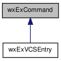

This class offers functionality around wxExecute. More...
#include <command.h>
Inheritance diagram for wxExCommand:

Collaboration diagram for wxExCommand:

Public Member Functions | |
| wxExCommand () | |
| Default constructor. | |
| long | Execute (const wxString &command, const wxString &wd=wxEmptyString) |
| Executes the command. | |
| bool | GetError () const |
| Returns true if the output contains error info instead of normal vcs info. | |
| const wxString & | GetOutput () const |
| Gets the output from Execute. | |
| virtual void | ShowOutput (const wxString &caption=wxEmptyString) const |
| Shows output from Execute. | |
Static Protected Member Functions | |
| static wxExSTCEntryDialog * | GetDialog () |
| Gets the dialog used for presenting the output. | |
Detailed Description
This class offers functionality around wxExecute.
Member Function Documentation
| bool wxExCommand::GetError | ( | ) | const [inline] |
Returns true if the output contains error info instead of normal vcs info.